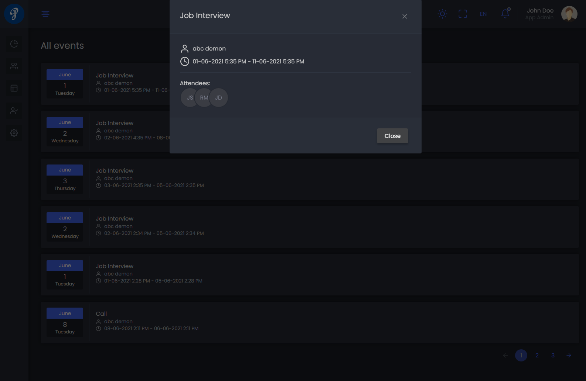

Dashboard
User can Manage jobs, his event & todo list here, You can,
- View a list of your Jobs.
- Filter your job list by Active / Inactive / Draft Jobs.
- Active : The jobs which are published and accessible publicly.
- Inactive : The jobs which are closed.
- Draft Jobs : The jobs which are newly created yet to be published.
By clicking the option we perform different action on Dashboard
Actions are -
- Preview
- Edit
- Edit job post
- Settings
- Sharable link
- activate job
- De-activate
- publish job
- Delete
Preview
Edit
To edit the basic Information of a Job, Click edit on option menu
Edit job post
To edit a "Job Post", Click edit on option menu. This job is publicly accessible information for a job post.
Setting
Setting is a place where you can "edit/delete" settings for a specific job. You can- edit "Apply Form", "Job Stages" & Assign Members into the "Hiring Team" for that specific job.
Below we will describe details about this.-
Apply Form
You can edit “Apply Form” setting. Which can be applied to the application form that applicants will use to apply for the job. After editing you can then save changes. You can also preview the Application form.
Features of "Apply Form"
- Can save changes
- Can preview "Apply form".
- Can Add New Section.
- Can hide/show a Section.
- Can add/edit/delete a field of a specific section.
- Basic Information section and its fields cannot edit or hide.
-
Job Stage
Using job stage you can "add/edit/delete" Specific Job Stages. where-
- Stage named: new, hired, disqualified cannot be altered or edited.
- When an applicant applied for this specific job he/she will be on new stage
- When an applicant is hired he/she will be on hired stage
- When an applicant is disqualified he/she will be on disqualified stage.
-
Hiring Team
With "Hiring Team" you can assign team member for this job. Those member can manage this specific job.
Features are- You can "add" member to this job
- You can "delete" member form this job
Draft & Publish Job
By default, when a user creates a job, it is in "draft job" status. You can see all your draft job by clicking filter "draft". You can After configuring necessary setting, you can publish the job.
De-activate Job
To de-activate the job you can click the de-activate job option.
Activate/Reactivate Closed Job
To de-activate the job you can click the de-activate job option
Delete Closed Job
You can only delete de-activated job. To delete a job you first need to de-activated it. then click delete job option
Events for user
User can see his recent events in his dashboard. Features are-
- You can see all your events by clicking 'view all'.
- You can see a specific event details by clicking on a event. 
Todo for user
User can see all to-dos in his dashboard. Features are-
- You can add a task to todo.
- You can mark tasks as completed by checking on the task.
- You can delete both completed and incomplete task .
To get Specific job overview click overview Overview button at specific job
At job overview page you can manage candidates for specific job. It shows a Kanban view. Where column means Job stages. You can move candidate from one stage to another simply dragging the candidate.
You can-
- Move candidate from one stage to another stage
- You can add candidate to this job
-
By Clicking On the candidate you can manage.
- You can set interview with specific candidate by clicking Event where you can assign attendees for this interview.
- You can send custom email with specific candidate by clicking email icon.
- You can disqualify specific candidate by clicking disqualify icon.
- You can give review specific candidate by clicking star icon.
- You can also change stage specific candidate by clicking change stage icon.
- You can add interview related notes with specific candidate by clicking note tab.
- You can view the timeline activities for specific candidate by clicking timeline tab.
- You can view applicants information by clicking applicant details, question & answer, attachment tab. Basically, when an applicant applied online for a specific job. He may fill up the apply form. It can be determined whether an applicant should require/not require to fill up those information
-
There is a tab to display all candidates list for this job. named 'Candidates'.
Candidates
User can Manage Candidates here. You can,
- View a list of your Candidates.
- Candidate list will be shown without disqualified candidates by default
- You can see disqualified candidates by using Status filter by selection Disqualified
- Filter your Candidate list by Applied date, Job, Status, Review, Gender.
- Applied date : Filter list by candidates applied date.
- Job : Filter list by job post.
- Review : Filter list by review given.
- Gender : Filter list by gender.
- Candidate who applied for multiple Job post can be seen Job Application Column.
- Click Multi to expand and see other posts which the can candidate applied
- Single means the candidate applied for only one job post
-
You can add candidate manually by clicking Add candidate
- Enter email to verify if the candidate is already in our system if not then add candidate
- Already added candidate can only be assigned to job post
- Available actions are Assign Job, Edit, Delete, .
- Assign Job : Assign Candidate to a new job post.
- Edit : Edit candidate.
- Delete : Delete Candidate.
-
By Clicking On the candidate you can manage.
- Set event with specific candidate by clicking Event where you can assign attendees for this interview.
- Send custom email with specific candidate by clicking email icon.
- Disqualify specific candidate by clicking disqualify icon.
- Give Review specific candidate by clicking star icon.
- Change Stage specific candidate by clicking change stage icon.
- Add Notes with specific candidate by clicking note tab.
- View Timeline activities for specific candidate by clicking timeline tab.
- You can view applicants information by clicking applicant details,question & answer,attachment tab. Basically, when an applicant applied online for that specific job. He may fill up the apply form. It can be made optional whether he/she should be required/not required to fill up that information
Career page
User can design Career page here. You can,
- Design Career page as you want. This will be seen by candidates
- Get a Preview of the Career page
User & Roles
Create application Users and assign them particular Roles from here.
Functions that you can perform here,
-
Send invitations to email addresses to add them as application users.
-
Add Role with specific permissions.
- Filter them as All Users, Active, Inactive and Invited.
-
Mange User with Roles

Setting
Set your Application Setting and Job Setting here.
App Setting
Set various settings which are essential to run the application.
Functions that you can perform here,
- Manage application General settings
- Add Email service for User invitation, successful application for candidates, disqualify candidate, create event and Receiving Notifications
- Manage Notifications from Notification settings
- Check for newer updates and Update for New Features and Bug fixes
Job Setting
Set your various job settings here which will perform as default job setting while setting up individual Job Setting.
Functions that you can perform here,
-
Apply form:
You can edit “Apply Form” setting. Which can be applied to the application form that applicants will use to apply for the job. After editing you can then save changes. You can also preview the Application form.
-
Hiring Stage:
- Using hiring stage you can add/edit/delete specific Job Stages. where- Stage named: new, hired, disqualified cannot be altered or edited.
- When an applicant applied for this specific job he/she will be on new stage
- When an applicant is hired he/she will be on hired stage
- When an applicant is disqualified he/she will be on disqualified stage.
- Manage general event types
- Mange general job types
- Manage location form here